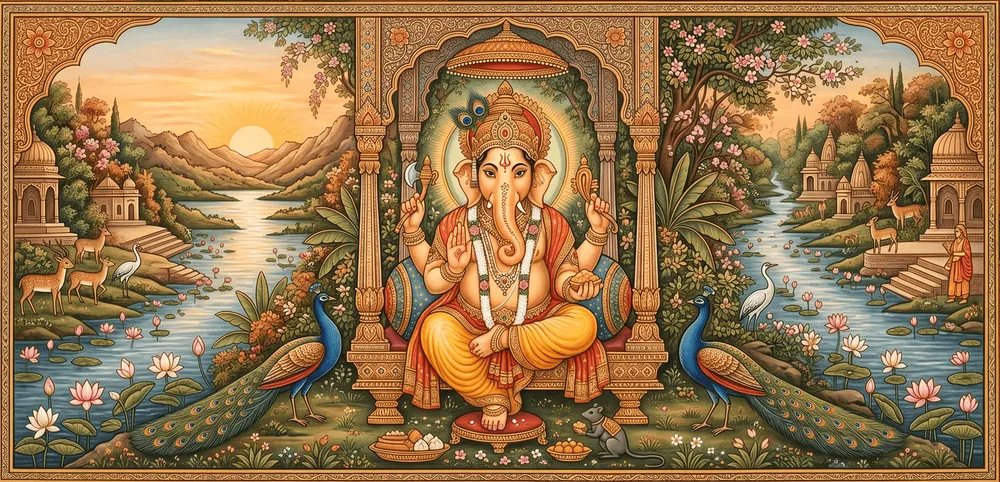
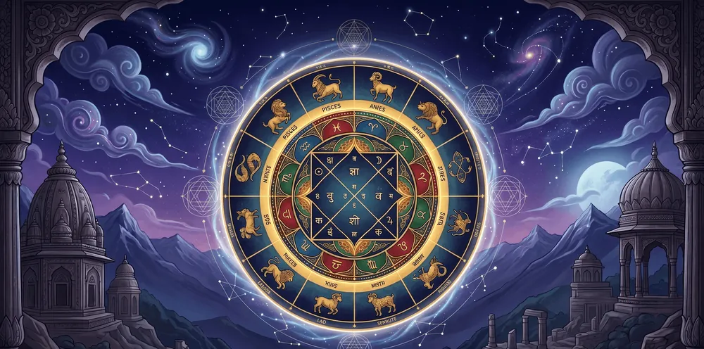
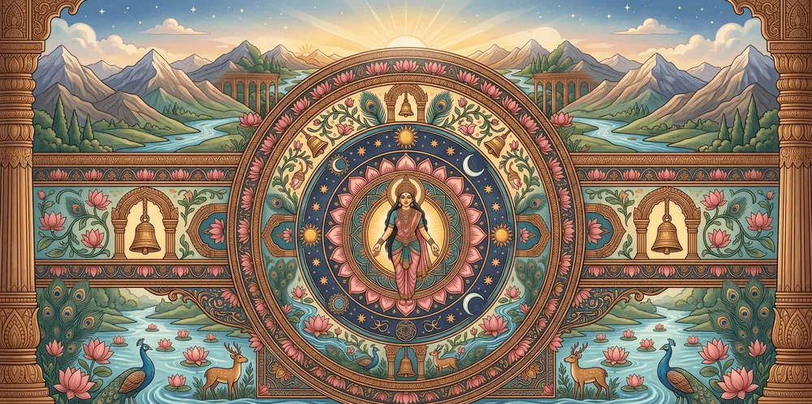
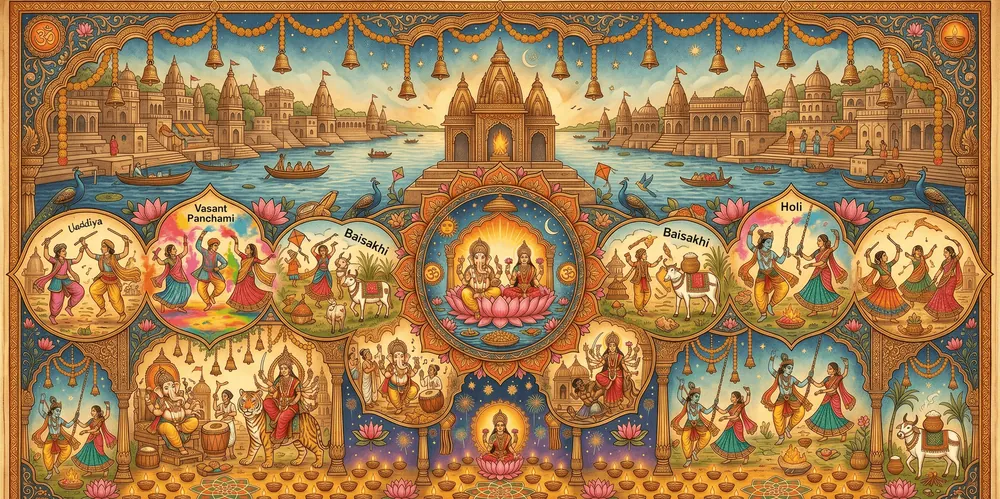
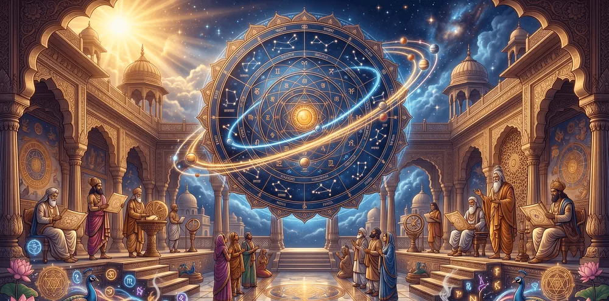
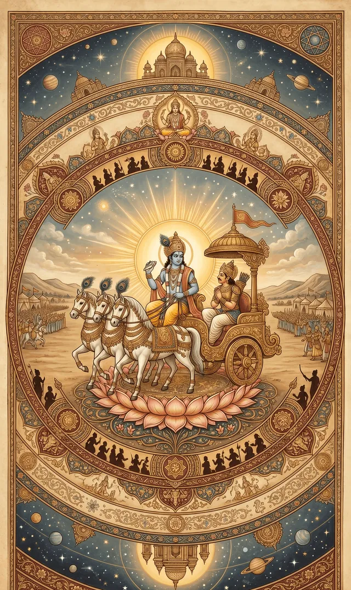
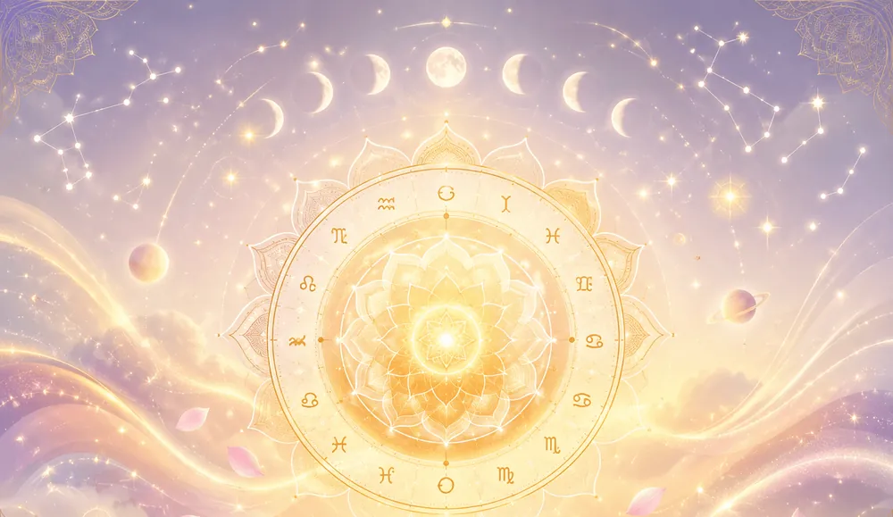

AI
Vedic Astrology App · Android
JyoticaYour everyday cosmic companion.
Ancient Jyotish, read for your life today. Your Kundali, a daily horoscope from your own chart, Panchang, Muhurta, AI astrologers and live temple darshan — all in one calm, beautiful app.
✦ Powered by the JIVA-X Engine ✦
Get it on Play Store ↗
Free · English, हिंदी, Hinglish
10 AI astrologersReady when you are
Live darshan14 temples · aarti reminders
10
AI astrologers
14
Temples streaming live
100+
Aartis, chalisas & stotrams
3
Languages — English, हिंदी, Hinglish
AI astrologers
An astrologer for every question
Ten AI astrologers, two for each area of life. Pick who you'd like to talk to and chat in your own thread — they read your birth chart before they answer.
AI
Raghav Mishra
AI career astrologerYou can askWill I get a job this year?Best time to switch job?Which field suits me?
AI
Devika Sharma
AI marriage astrologerAI
Suresh Trivedi
AI marriage astrologerYou can askWhen will I get married?Is my partner compatible?What does my chart say about love?
AI
Kavya Shukla
AI love astrologerAI
Arjun Bhardwaj
AI love astrologerYou can askWill I find love this year?What does my chart say about relationships?When is my Venus period?
AI
Lakshmi Pandey
AI finance astrologerAI
Nikhil Gautam
AI finance astrologerYou can askWhen is my best financial period?Should I invest now?What does my chart say about wealth?
AI
Ananya Chaturvedi
AI health astrologerAI
Vihaan Dwivedi
AI health astrologerYou can askWhat health issues should I watch for?Best time to start a wellness routine?What does my chart say about energy?
Every astrologer in Jyotica is an AI persona powered by the JIVA-X Engine — not a human astrologer.
What's inside
Everything the sky has to say about your day
From your full birth chart to the right moment to begin — Jyotica brings the classical Jyotish toolkit into one calm, modern app.

Kundali
Your birth chart, read like a story
Enter your date, time and place of birth and Jyotica builds your complete Kundali — Rasi and Navamsa charts drawn for you, then read chapter by chapter in plain language.
- Birth Profile
- Characteristics
- Influences
- Yogas
- Navamsa (D9)
- Favourable Periods
- Life Timeline
- Remedies

Daily
Horoscope from your chart
Guidance read from your own birth chart — not a generic sun sign — fresh every day.
Compatibility
Kundali matching
Compare two charts across the traditional gunas (guna milan) for relationships and marriage.
Timing
Muhurta
Find auspicious windows for what matters — travel, ceremonies and new beginnings.

Almanac
Daily Panchang
Tithi, nakshatra, yoga and karana, with sunrise and sunset for where you are.

Calendar
Festival calendar
The full Hindu calendar of festivals, personalised and searchable, so nothing slips by.
Fasting days
Vrat finder
Ekadashi, Pradosh, Purnima, Amavasya, Sankashti Chaturthi, Shivaratri and more — know the next one and what it's for.
Sky events
Eclipse tracker
When solar and lunar eclipses fall, what they mean for your chart, and a reminder before each one.

Learn
Knowledge Hub
Short, clear lessons on birth charts, Panchang, dashas, transits and compatibility.
Sunrise & sunset times
Reminders & notifications
Biometric lock
Light & dark themes
English · हिंदी · Hinglish
Devotion
Darshan, aarti, jaap and Gita — every day
Beyond your chart, Jyotica keeps your whole daily practice in one place — from morning shloka to evening aarti.
Temple live darshan
See which temples are live right now, browse the rest, and set a reminder before the next aarti — mangala to shayan.
- Somnath
- Mahakaleshwar
- Kashi Vishwanath
- Jagannath Dham
- Dwarkadhish
- Badrinath Dham
- Vaishno Devi
- Tirupati Balaji
- Shirdi Sai Baba
- Ram Mandir
- Khatu Shyam Ji
- ISKCON Bangalore
- ISKCON Vrindavan
- ISKCON Mayapur

Gita daily
A Bhagavad Gita verse a day
A shloka each morning with its chapter and verse, and the meaning of every word.
Digital mala counter
Tap a rudraksha mala to count your jaap — 108 to a round by default, or your own number. Choose a mantra or add yours.
Aarti, chalisa & stotram library
ॐ जय जगदीश हरे
om jay jagadish hare
Over 100 aartis, chalisas, stotrams and vrat kathas in Devanagari, with an optional Roman line under each verse.

Daily ritual
Today's ritual & check-in
A simple ritual for the day, and a quick energy check-in to note how you feel.
Streaks
Streaks & reminders
Build a daily streak and a jaap streak, and get reminders before aartis and eclipses so the moments that matter don't slip by.
Jyotica guide
Free Kundli, Rashifal, Panchang & Muhurat — all in one astrology app
Everything people look up about Vedic astrology (Jyotish) every day, in one place. Here is what you can find in Jyotica.
Free Kundli
जन्म कुंडलीMake your Janam Kundali (birth chart) free from your date, time and place of birth — your Lagna (ascendant), Chandra Rashi (moon sign), Nakshatra, Rasi (D1) and Navamsa (D9) charts, planet positions, yogas and doshas.
Aaj ka Rashifal
आज का राशिफलToday's horoscope read from your own birth chart, not just your sun sign — in Hindi, English or Hinglish, with a fresh reading every day.
Kundli Milan
कुंडली मिलान · गुण मिलानKundli matching for marriage with Ashtakoot guna milan out of 36 gunas, plus emotional, mental and family compatibility.
Aaj ka Panchang
आज का पंचांगToday's tithi, nakshatra, yoga and karana, sunrise and sunset, Rahu Kaal and Abhijit Muhurta — the daily Hindu Panchang at a glance.
Shubh Muhurat
शुभ मुहूर्तAuspicious dates and times for vivah, griha pravesh, a new vehicle, property, namakaran, annaprashan, mundan, upanayana, a new business, bhoomi puja and buying gold.
Dasha & remedies
महादशा · उपायYour Vimshottari Mahadasha and Antardasha periods on a life timeline, with remedies — gemstone (ratna), mantra and dasha practices.
Vrat & festival calendar
व्रत · त्योहारEkadashi, Pradosh, Purnima, Amavasya, Sankashti Chaturthi and Shivaratri dates, the Hindu festival calendar and solar and lunar eclipses.
Learn Vedic astrology
ज्योतिष सीखेंShort lessons on Lagna, the 12 houses, divisional charts, Shadbala, Sade Sati, Rahu and Ketu Mahadasha, retrograde planets and Ashta Koota matching.
FAQ
Frequently asked questions
What is Jyotica?
Jyotica is a Vedic astrology (Jyotish) app for Android by Windermere Labs. It builds your Kundali from your birth details and gives you a daily horoscope based on your own chart, the daily Panchang, Muhurta timings, Kundali matching, a Hindu festival calendar and vrat finder, AI astrologers, live temple darshan, an aarti and chalisa library and a mantra jaap counter.
Is Jyotica free?
Yes, Jyotica is free to download on Google Play. The daily horoscope, Panchang, Muhurta and your birth chart are free. Deeper readings and the AI astrologers are part of optional paid plans.
What do I need to make my Kundali?
Your date of birth, time of birth and place of birth. Jyotica uses them to draw your Rasi (D1) and Navamsa (D9) charts and to read your characteristics, yogas, favourable periods, life timeline and remedies in plain language.
How can I make my Kundli for free?
Install Jyotica from Google Play and enter your date, time and place of birth. Your Kundli is made for free, with your Lagna, moon sign, nakshatra and birth chart.
Does Jyotica show today's Panchang and Rahu Kaal?
Yes. The daily Panchang shows the tithi, nakshatra, yoga, karana, sunrise and sunset, Rahu Kaal and Abhijit Muhurta for the day.
Is the daily horoscope based on my sun sign?
No. Jyotica's daily horoscope is read from your own birth chart, so it is personal to you rather than shared by everyone with the same sign.
Can Jyotica match two Kundalis for marriage?
Yes. Kundali matching compares two birth charts across the traditional gunas (guna milan) and shows how well they align for a relationship or marriage.
Are Jyotica's astrologers real people?
No. Every astrologer in Jyotica is an AI persona powered by the JIVA-X Engine, and the app labels them as AI. There are ten of them, two each for career, marriage, love, finance and health, and each one reads your birth chart before answering.
Does Jyotica show Ekadashi and other vrat dates?
Yes. The vrat finder lists upcoming fasting days such as Ekadashi, Pradosh, Purnima, Amavasya, Sankashti Chaturthi and Shivaratri, and the festival calendar covers the rest of the Hindu year.
Can I watch temple aarti live in Jyotica?
Yes. Temple Live Darshan streams 14 temples, including Somnath, Mahakaleshwar, Kashi Vishwanath, Jagannath Dham, Tirupati Balaji, Vaishno Devi, Shirdi Sai Baba, Ram Mandir, Khatu Shyam Ji and ISKCON, shows upcoming aarti times and can remind you before one starts.
Which languages does Jyotica support?
English, Hindi (हिंदी) and Hinglish. You can switch language at any time in the app.
Is Jyotica available on iPhone?
Jyotica is currently available on Android through Google Play.
Is Jyotica the same as Jyotish?
Jyotish is the Sanskrit name for Vedic astrology. Jyotica is a Jyotish app made by Windermere Labs. People sometimes search for it as Jyotika or Jyotica AI.
Should I make decisions based on Jyotica's readings?
Jyotica's readings are for guidance and reflection. They are not a substitute for medical, legal or financial advice. See our Terms & Conditions and AI Policy.
Meet your everyday cosmic companion
Bring the wisdom of Jyotish into your pocket — clear, personal, and beautifully made.
Get it on Play Store ↗